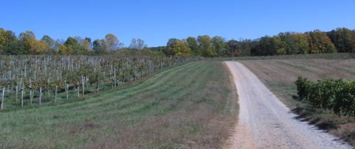

|
North America >
USA >
North Carolina >
Yadkin Valley >
Surry County >
Black Wolf Vineyards
Black Wolf Vineyards
Dobson, NC

The Wolf's Lair restaurant is located on 20 acres of vineyards in the piedmont of North Carolina's Yadkin Valley. Upstairs from the restaurant one can taste the wines served there.
www.blackwolfvineyards.com
Vintages:
Yadkin Valley North Carolina Chardonnay
2005
Yadkin Valley North Carolina Sauvignon Blanc
2005
Yadkin Valley North Carolina Seyval Blanc
2006
Yadkin Valley North Carolina Wolfsbane Rose
NV
Yadkin Valley North Carolina Blue Moon White
NV
Yadkin Valley North Carolina Moonlight White
NV
Yadkin Valley North Carolina Cabernet Sauvignon
2004
Yadkin Valley North Carolina Pinot Noir
2005
Yadkin Valley North Carolina Chambourcin
2006
Yadkin Valley North Carolina Wolf's Lair Red
NV
Yadkin Valley North Carolina Sweet Wolf Red
NV
|